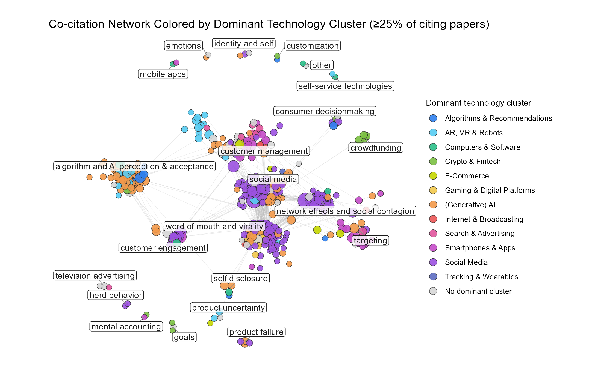

| Paper | Number of Citations in Corpus | |
|---|---|---|
| 3 | HAYES A.F. INTRODUCTION TO MEDIATION MODERATION AND CONDITIONAL PROCESS ANALYSIS: A REGRESSION-BASED APPROACH (2013) | 31 |
| 4 | HAYES A.F. INTRODUCTION TO MEDIATION MODERATION AND CONDITIONAL PROCESS ANALYSIS: A REGRESSION-BASED APPROACH (2017) | 31 |
| 16 | FORNELL C. LARCKER D.F. EVALUATING STRUCTURAL EQUATION MODELS WITH UNOBSERVABLE VARIABLES AND MEASUREMENT ERROR JOURNAL OF MARKETING RESEARCH 18 1 PP. 39-50 (1981) | 19 |
| 17 | SPENCER S.J. ZANNA M.P. FONG G.T. ESTABLISHING A CAUSAL CHAIN: WHY EXPERIMENTS ARE OFTEN MORE EFFECTIVE THAN MEDIATIONAL ANALYSES IN EXAMINING PSYCHOLOGICAL PROCESSES JOURNAL OF PERSONALITY AND SOCIAL PSYCHOLOGY 89 6 PP. 845-851 (2005) | 19 |
| 20 | PETRIN A. TRAIN K. A CONTROL FUNCTION APPROACH TO ENDOGENEITY IN CONSUMER CHOICE MODELS JOURNAL OF MARKETING RESEARCH 47 1 PP. 3-13 (2010) | 18 |
| 23 | WOOLDRIDGE J.M. ECONOMETRIC ANALYSIS OF CROSS SECTION AND PANEL DATA (2010) | 18 |
| 38 | WEDEL M. KANNAN P.K. MARKETING ANALYTICS FOR DATA-RICH ENVIRONMENTS JOURNAL OF MARKETING 80 6 PP. 97-121 (2016) | 16 |
| 42 | PENNEBAKER J.W. BOYD R.L. JORDAN K. BLACKBURN K. THE DEVELOPMENT AND PSYCHOMETRIC PROPERTIES OF LIWC2015 (2015) | 15 |
| 43 | ROSENBAUM P.R. RUBIN D.B. THE CENTRAL ROLE OF THE PROPENSITY SCORE IN OBSERVATIONAL STUDIES FOR CAUSAL EFFECTS BIOMETRIKA 70 1 PP. 41-55 (1983) | 15 |
| 51 | PREACHER K.J. HAYES A.F. ASYMPTOTIC AND RESAMPLING STRATEGIES FOR ASSESSING AND COMPARING INDIRECT EFFECTS IN MULTIPLE MEDIATOR MODELS BEHAVIOR RESEARCH METHODS 40 3 PP. 879-891 (2008) | 14 |
| 64 | HAYES A.F. INTRODUCTION TO MEDIATION MODERATION AND CONDITIONAL PROCESS ANALYSIS: A REGRESSION-BASED APPROACH (2018) | 13 |
| 65 | HECKMAN J.J. SAMPLE SELECTION BIAS AS A SPECIFICATION ERROR ECONOMETRICA 47 1 PP. 153-161 (1979) | 13 |
| 94 | PARK S. GUPTA S. HANDLING ENDOGENOUS REGRESSORS BY JOINT ESTIMATION USING COPULAS MARKETING SCIENCE 31 4 PP. 567-586 (2012) | 12 |
| 104 | COHEN J. STATISTICAL POWER ANALYSIS FOR THE BEHAVIORAL SCIENCES (1988) | 11 |
| 105 | GOLDFARB A. TUCKER C. WANG Y. CONDUCTING RESEARCH IN MARKETING WITH QUASI-EXPERIMENTS JOURNAL OF MARKETING 86 3 PP. 1-20 (2022) | 11 |
| 122 | ANDERSON J.C. GERBING D.W. STRUCTURAL EQUATION MODELING IN PRACTICE: A REVIEW AND RECOMMENDED TWO-STEP APPROACH PSYCHOLOGICAL BULLETIN 103 3 PP. 411-423 (1988) | 10 |
| 126 | BLEI D.M. NG A.Y. JORDAN M.I. LATENT DIRICHLET ALLOCATION JOURNAL OF MACHINE LEARNING RESEARCH 3 PP. 993-1022 (2003) | 10 |
| 189 | AIKEN L.S. WEST S.G. MULTIPLE REGRESSION: TESTING AND INTERPRETING INTERACTIONS (1991) | 8 |
| 215 | GREENE W.H. ECONOMETRIC ANALYSIS (2003) | 8 |
| 218 | HAYES A.F. PARTIAL CONDITIONAL AND MODERATED MODERATED MEDIATION: QUANTIFICATION INFERENCE AND INTERPRETATION COMMUNICATION MONOGRAPHS 85 1 PP. 4-40 (2018) | 8 |
| 244 | WOOLDRIDGE J.M. ECONOMETRIC ANALYSIS OF CROSS SECTION AND PANEL DATA (2002) | 8 |
| 386 | GREENE W.H. ECONOMETRIC ANALYSIS (2000) | 6 |
| 389 | HARTMANN J. HUPPERTZ J. SCHAMP C. HEITMANN M. COMPARING AUTOMATED TEXT CLASSIFICATION METHODS INTERNATIONAL JOURNAL OF RESEARCH IN MARKETING 36 1 PP. 20-38 (2019) | 6 |
| 397 | JOHNSON P.O. NEYMAN J. TESTS OF CERTAIN LINEAR HYPOTHESES AND THEIR APPLICATION TO SOME EDUCATIONAL PROBLEMS STATISTICAL RESEARCH MEMOIRS 1 PP. 57-93 (1936) | 6 |
| 415 | LIU X. SINGH P.V. SRINIVASAN K. A STRUCTURED ANALYSIS OF UNSTRUCTURED BIG DATA BY LEVERAGING CLOUD COMPUTING MARKETING SCIENCE 35 3 PP. 363-388 (2016) | 6 |
| 436 | OPPENHEIMER D.M. MEYVIS T. DAVIDENKO N. INSTRUCTIONAL MANIPULATION CHECKS: DETECTING SATISFICING TO INCREASE STATISTICAL POWER JOURNAL OF EXPERIMENTAL SOCIAL PSYCHOLOGY 45 4 PP. 867-872 (2009) | 6 |
| 444 | PREACHER K.J. HAYES A.F. SPSS AND SAS PROCEDURES FOR ESTIMATING INDIRECT EFFECTS IN SIMPLE MEDIATION MODELS BEHAVIOR RESEARCH METHODS INSTRUMENTS AND COMPUTERS 36 4 PP. 717-731 (2004) | 6 |
| 445 | PREACHER K.J. RUCKER D.D. HAYES A.F. ADDRESSING MODERATED MEDIATION HYPOTHESES: THEORY METHODS AND PRESCRIPTIONS MULTIVARIATE BEHAVIORAL RESEARCH 42 1 PP. 185-227 (2007) | 6 |
| 456 | SPIGGLE S. ANALYSIS AND INTERPRETATION OF QUALITATIVE DATA IN CONSUMER RESEARCH JOURNAL OF CONSUMER RESEARCH 21 3 PP. 491-503 (1994) | 6 |
| 559 | GELMAN A. HILL J. DATA ANALYSIS USING REGRESSION AND MULTILEVEL/HIERARCHICAL MODELS (2006) | 5 |
| 576 | HAIR J.F. ANDERSON R.E. TATHAM R.L. BLACK W.C. MULTIVARIATE DATA ANALYSIS (1998) | 5 |
| 579 | HAUSMAN J.A. SPECIFICATION TESTS IN ECONOMETRICS ECONOMETRICA 46 6 PP. 1251-1271 (1978) | 5 |
| 580 | HAYES A.F. AN INTRODUCTION TO MEDIATION MODERATION AND CONDITIONAL PROCESS ANALYSIS: A REGRESSION-BASED APPROACH (2013) | 5 |
| 581 | HAYES A.F. INTRODUCTION TO MEDIATION MODERATION AND CONDITIONAL PROCESS ANALYSIS (2013) | 5 |
| 588 | HILL S. PROVOST F. VOLINSKY C. NETWORK-BASED MARKETING: IDENTIFYING LIKELY ADOPTERS VIA CONSUMER NETWORKS STATISTICAL SCIENCE 21 2 PP. 256-276 (2006) | 5 |
| 595 | HOTELLING H. STABILITY IN COMPETITION ECONOM. J 39 153 PP. 41-57 (1929) | 5 |
| 599 | IACUS S.M. KING G. PORRO G. CAUSAL INFERENCE WITHOUT BALANCE CHECKING: COARSENED EXACT MATCHING POLITICAL ANALYSIS 20 1 PP. 1-24 (2012) | 5 |
| 625 | LANDIS J.R. KOCH G.G. THE MEASUREMENT OF OBSERVER AGREEMENT FOR CATEGORICAL DATA BIOMETRICS 33 1 PP. 159-174 (1977) | 5 |
| 645 | MEYVIS T. VAN OSSELAER S.M.J. INCREASING THE POWER OF YOUR STUDY BY INCREASING THE EFFECT SIZE JOURNAL OF CONSUMER RESEARCH 44 5 PP. 1157-1173 (2018) | 5 |
| 653 | NUNNALLY J.C. PSYCHOMETRIC THEORY (1978) | 5 |
| 658 | PAPIES D. EBBES P. VAN HEERDE H.J. ADDRESSING ENDOGENEITY IN MARKETING MODELS ADVANCED METHODS FOR MODELING MARKETS PP. 581-627 (2017) | 5 |
| 666 | PREACHER K.J. HAYES A.F. ASYMPTOTIC AND RESAMPLING STRATEGIES FOR ASSESSING AND COMPARING INDIRECT EFFECTS IN MULTIPLE MEDIATOR MODELS BEHAVIOR RESEARCH METHODS 40 PP. 879-891 (2008) | 5 |
Detailed and Supplementary Analyses for 2 – < add > the Field
In our bibliometric analysis, we focus on historiographic and co-citation analyses. Below, we report the specifications for each and provide interactive maps to explore the results.
Historiographic Analysis
For the historiographic analysis, we work with the bibliometrix package (Aria & Cuccurullo, 2017) (version 5.4.1), using the histplot function on our corpus. We further quantify cluster citations along two links: clusters citing other clusters, and clusters being cited by other clusters. For citation comparisons within and across clusters, we include two control variables: the overall citeability of the cluster, and a normalization of the citing / cited-by measures, treating each as the percentage of all citations this cluster makes / receives. We compare how much more often (in %) a cluster cites / is cited by another cluster than this cluster is cited / cites on average across all other clusters, and create a ratio based on the two values.
- Each cell carries a raw count, the cross-citation share \(CC_{ij}\) of row cluster \(i\) with column cluster \(j\), and the ratio \(r_{ij}\).
- In the cites grid, \(CC_{ij}\) divides the cell by all citations the row cluster makes within the corpus: how its outgoing attention is distributed.
- In the cited-by grid, \(CC_{ij}\) divides the cell by all citations the row cluster receives within the corpus: where its incoming attention comes from.
- Rows sum to 100% in both grids, so \(CC_{ij}\) describes a cluster’s profile rather than its volume, and clusters of different size stay comparable.
- \(\overline{CC}_j = \frac{1}{15}\sum_{i \neq j} CC_{ij}\), the average share the other clusters record for that same column cluster.
- The average is taken over the fifteen other rows, excluding the column cluster’s own row, so a cluster’s internal citation does not set its own reference point.
- \(r_{ij} = CC_{ij} / \overline{CC}_j\), so 1 = the usual amount of attention for that counterpart, 2 = twice as much, 0.5 = half.
- On the diagonal, \(r_{ii}\) states how much more of its attention a cluster keeps internally than the other clusters direct at it.
We again use Dirichlet posteriors to make two comparisons. First, does any given cluster cite / get cited by other clusters credibly more than this cluster cites / is cited by other clusters on average (i.e., excluding self-citations)? Second – reported on the diagonal in Table 1 and Table 2 – does a cluster cite itself credibly more often than all clusters cite themselves on average? To account for the fact that age affects citations, we construct our first prior by creating a citation vector for each paper based on the papers it could cite / be cited by at that time, and averaging across all of these vectors to construct the baseline distribution. We then compare the cluster distribution against this baseline and sample from a gamma distribution with 20,000 draws. We again treat values lying credibly outside the 95% credible interval as lower / higher. For self-citation, we construct a prior by averaging across all self- vs. all-other percentages and follow the same sampling procedure.
| Technology Cluster | Algorithms & Recommendations | AR, VR & Robots | Auctions & Pricing | Computers & Software | Crypto & Fintech | E-Commerce | Gaming & Digital Platforms | (Generative) AI | Internet & Broadcasting | Mobility & Transportation | Search & Advertising | Smartphones & Apps | Social Media | Streaming, Audio & Video | Tracking & Wearables | Other | Average excl. own cluster |
|---|---|---|---|---|---|---|---|---|---|---|---|---|---|---|---|---|---|
| Algorithms & Recommendations | 186(40.8%, 10.44) | 19(4.2%, 1.91)1 | 5(1.1%, 2.43) | 22(4.8%, 0.98)2 | 9(2%, 0.87) | 11(2.4%, 0.55) | 8(1.8%, 0.37)2 | 90(19.7%, 2.7)1 | 17(3.7%, 0.46)2 | 2(0.4%, 1) | 30(6.6%, 1.27) | 8(1.8%, 0.3)2 | 33(7.2%, 0.87) | 4(0.9%, 0.36) | 7(1.5%, 0.82) | 5(1.1%, 0.44)2 | 3.9% |
| AR, VR & Robots | 18(5.1%, 1.31) | 113(31.9%, 14.5)2 | 0(0%, 0)2 | 14(4%, 0.82)2 | 6(1.7%, 0.74)2 | 17(4.8%, 1.11) | 7(2%, 0.41)2 | 78(22%, 3.01)1 | 16(4.5%, 0.56)2 | 1(0.3%, 0.75) | 11(3.1%, 0.6) | 15(4.2%, 0.71) | 40(11.3%, 1.36)1 | 7(2%, 0.8) | 3(0.8%, 0.44)2 | 8(2.3%, 0.92) | 4.5% |
| Auctions & Pricing | 3(4.9%, 1.25) | 0(0%, 0) | 35(57.4%, 126.62)1 | 0(0%, 0)2 | 8(13.1%, 5.7)1 | 1(1.6%, 0.37) | 0(0%, 0) | 2(3.3%, 0.45) | 3(4.9%, 0.62) | 0(0%, 0) | 3(4.9%, 0.95) | 2(3.3%, 0.56) | 2(3.3%, 0.4) | 0(0%, 0) | 0(0%, 0) | 2(3.3%, 1.32) | 2.8% |
| Computers & Software | 15(3.3%, 0.84) | 12(2.6%, 1.18)1 | 1(0.2%, 0.44)2 | 180(39.4%, 8.05) | 3(0.7%, 0.3)2 | 15(3.3%, 0.76) | 21(4.6%, 0.95) | 57(12.5%, 1.71)1 | 38(8.3%, 1.04)2 | 1(0.2%, 0.5)2 | 9(2%, 0.39)2 | 51(11.2%, 1.89)1 | 17(3.7%, 0.45) | 9(2%, 0.8) | 8(1.8%, 0.99) | 20(4.4%, 1.76) | 4.1% |
| Crypto & Fintech | 8(2.5%, 0.64) | 8(2.5%, 1.14) | 2(0.6%, 1.32) | 9(2.8%, 0.57)2 | 138(42.7%, 18.57) | 9(2.8%, 0.65) | 30(9.3%, 1.91)1 | 26(8%, 1.1) | 17(5.3%, 0.67) | 3(0.9%, 2.25) | 14(4.3%, 0.83) | 11(3.4%, 0.57) | 31(9.6%, 1.16)1 | 9(2.8%, 1.11) | 6(1.9%, 1.04) | 2(0.6%, 0.24)2 | 3.8% |
| E-Commerce | 27(7.7%, 1.97)1 | 3(0.9%, 0.41) | 5(1.4%, 3.09) | 22(6.3%, 1.29)2 | 5(1.4%, 0.61)2 | 100(28.6%, 6.61)2 | 19(5.4%, 1.11) | 19(5.4%, 0.74) | 49(14%, 1.76) | 0(0%, 0)2 | 27(7.7%, 1.49) | 22(6.3%, 1.06) | 33(9.4%, 1.14)1 | 6(1.7%, 0.68) | 7(2%, 1.09) | 6(1.7%, 0.68)2 | 4.8% |
| Gaming & Digital Platforms | 18(3.6%, 0.92) | 8(1.6%, 0.73) | 2(0.4%, 0.88)2 | 33(6.5%, 1.33) | 9(1.8%, 0.78)2 | 37(7.3%, 1.69)1 | 162(32.1%, 6.6)2 | 16(3.2%, 0.44)2 | 38(7.5%, 0.94) | 5(1%, 2.5) | 30(6%, 1.16) | 34(6.7%, 1.13) | 79(15.7%, 1.9)1 | 19(3.8%, 1.51)1 | 7(1.4%, 0.77)2 | 7(1.4%, 0.56)2 | 4.5% |
| (Generative) AI | 114(8.9%, 2.28)1 | 105(8.2%, 3.73)1 | 3(0.2%, 0.44)2 | 65(5.1%, 1.04)2 | 13(1%, 0.43)2 | 32(2.5%, 0.58)2 | 37(2.9%, 0.6)2 | 550(43.1%, 5.9)1 | 74(5.8%, 0.73) | 3(0.2%, 0.5)2 | 54(4.2%, 0.81) | 53(4.2%, 0.71)2 | 107(8.4%, 1.01)1 | 21(1.6%, 0.64) | 28(2.2%, 1.2) | 16(1.3%, 0.52)2 | 3.8% |
| Internet & Broadcasting | 24(4.8%, 1.23) | 8(1.6%, 0.73) | 3(0.6%, 1.32)2 | 38(7.6%, 1.55)2 | 9(1.8%, 0.78) | 31(6.2%, 1.43) | 31(6.2%, 1.27)1 | 28(5.6%, 0.77) | 189(37.9%, 4.76) | 4(0.8%, 2) | 30(6%, 1.16) | 23(4.6%, 0.78)2 | 36(7.2%, 0.87)1 | 23(4.6%, 1.83)1 | 7(1.4%, 0.77) | 15(3%, 1.2) | 4.1% |
| Mobility & Transportation | 1(1.6%, 0.41) | 0(0%, 0) | 0(0%, 0) | 3(4.8%, 0.98) | 2(3.2%, 1.39) | 7(11.3%, 2.61)1 | 7(11.3%, 2.32)1 | 2(3.2%, 0.44) | 5(8.1%, 1.02) | 24(38.7%, 96.75) | 1(1.6%, 0.31) | 5(8.1%, 1.37) | 0(0%, 0)2 | 2(3.2%, 1.27) | 0(0%, 0) | 3(4.8%, 1.91) | 4.1% |
| Search & Advertising | 17(4.5%, 1.15) | 4(1%, 0.45) | 4(1%, 2.21) | 15(3.9%, 0.8)2 | 5(1.3%, 0.57)2 | 16(4.2%, 0.97) | 21(5.5%, 1.13) | 17(4.5%, 0.62) | 43(11.3%, 1.42) | 1(0.3%, 0.75)2 | 134(35.1%, 6.78) | 27(7.1%, 1.2) | 49(12.8%, 1.55)1 | 16(4.2%, 1.67)1 | 8(2.1%, 1.15) | 5(1.3%, 0.52)2 | 4.3% |
| Smartphones & Apps | 13(2.1%, 0.54) | 6(1%, 0.45) | 3(0.5%, 1.1)2 | 57(9.3%, 1.9) | 6(1%, 0.43)2 | 24(3.9%, 0.9) | 29(4.7%, 0.97) | 28(4.5%, 0.62) | 57(9.3%, 1.17) | 3(0.5%, 1.25) | 37(6%, 1.16) | 244(39.6%, 6.69) | 54(8.8%, 1.06)1 | 9(1.5%, 0.6) | 18(2.9%, 1.59) | 28(4.5%, 1.8) | 4% |
| Social Media | 27(2.6%, 0.67) | 16(1.5%, 0.68) | 1(0.1%, 0.22)2 | 29(2.8%, 0.57)2 | 12(1.1%, 0.48)2 | 42(4%, 0.92) | 69(6.6%, 1.36)1 | 32(3%, 0.41) | 80(7.6%, 0.95) | 3(0.3%, 0.75)2 | 67(6.4%, 1.24)1 | 46(4.4%, 0.74) | 549(52.3%, 6.32)1 | 43(4.1%, 1.63)1 | 16(1.5%, 0.82) | 18(1.7%, 0.68)2 | 3.2% |
| Streaming, Audio & Video | 7(2.4%, 0.61) | 4(1.4%, 0.64) | 1(0.3%, 0.66)2 | 13(4.5%, 0.92)2 | 7(2.4%, 1.04) | 13(4.5%, 1.04) | 21(7.3%, 1.5)1 | 12(4.2%, 0.58) | 47(16.4%, 2.06)1 | 1(0.3%, 0.75) | 15(5.2%, 1) | 14(4.9%, 0.83) | 36(12.5%, 1.51)1 | 79(27.5%, 10.94)2 | 12(4.2%, 2.3) | 5(1.7%, 0.68)2 | 4.8% |
| Tracking & Wearables | 5(2.5%, 0.64) | 3(1.5%, 0.68) | 0(0%, 0)2 | 7(3.5%, 0.72)2 | 4(2%, 0.87) | 3(1.5%, 0.35) | 5(2.5%, 0.51) | 11(5.4%, 0.74) | 9(4.5%, 0.56) | 0(0%, 0)2 | 16(7.9%, 1.53)1 | 20(9.9%, 1.67)1 | 13(6.4%, 0.77) | 4(2%, 0.8) | 93(46%, 25.18)1 | 9(4.5%, 1.8) | 3.6% |
| Other | 5(2.1%, 0.54) | 12(5%, 2.27)1 | 1(0.4%, 0.88)2 | 18(7.5%, 1.53) | 0(0%, 0)2 | 11(4.6%, 1.06) | 7(2.9%, 0.6) | 12(5%, 0.68) | 20(8.3%, 1.04) | 2(0.8%, 2) | 14(5.8%, 1.12) | 21(8.7%, 1.47) | 19(7.9%, 0.95) | 8(3.3%, 1.31) | 9(3.7%, 2.03) | 82(34%, 13.56) | 4.4% |
| Technology Cluster | Algorithms & Recommendations | AR, VR & Robots | Auctions & Pricing | Computers & Software | Crypto & Fintech | E-Commerce | Gaming & Digital Platforms | (Generative) AI | Internet & Broadcasting | Mobility & Transportation | Search & Advertising | Smartphones & Apps | Social Media | Streaming, Audio & Video | Tracking & Wearables | Other | Average excl. own cluster |
|---|---|---|---|---|---|---|---|---|---|---|---|---|---|---|---|---|---|
| Algorithms & Recommendations | 186(38.1%, 9.72) | 18(3.7%, 1.29) | 3(0.6%, 1.3) | 15(3.1%, 0.79) | 8(1.6%, 0.56)2 | 27(5.5%, 1.54)1 | 18(3.7%, 0.71)2 | 114(23.4%, 2.09)1 | 24(4.9%, 0.92)1 | 1(0.2%, 0.33)2 | 17(3.5%, 0.95) | 13(2.7%, 0.46)2 | 27(5.5%, 0.68) | 7(1.4%, 0.48)2 | 5(1%, 0.67)2 | 5(1%, 0.41)2 | 4.1% |
| AR, VR & Robots | 19(5.9%, 1.51) | 113(35.2%, 12.28) | 0(0%, 0)2 | 12(3.7%, 0.94) | 8(2.5%, 0.88)2 | 3(0.9%, 0.25) | 8(2.5%, 0.48)2 | 105(32.7%, 2.92)1 | 8(2.5%, 0.47) | 0(0%, 0)2 | 4(1.2%, 0.33)2 | 6(1.9%, 0.32)2 | 16(5%, 0.62) | 4(1.2%, 0.42)2 | 3(0.9%, 0.6)2 | 12(3.7%, 1.5) | 4.3% |
| Auctions & Pricing | 5(7.6%, 1.94) | 0(0%, 0) | 35(53%, 115.22)1 | 1(1.5%, 0.38) | 2(3%, 1.05) | 5(7.6%, 2.13)1 | 2(3%, 0.58) | 3(4.5%, 0.4) | 3(4.5%, 0.84) | 0(0%, 0) | 4(6.1%, 1.66) | 3(4.5%, 0.77) | 1(1.5%, 0.18) | 1(1.5%, 0.52) | 0(0%, 0) | 1(1.5%, 0.61) | 3.1% |
| Computers & Software | 22(4.2%, 1.07) | 14(2.7%, 0.94) | 0(0%, 0)2 | 180(34.3%, 8.75)2 | 9(1.7%, 0.6)2 | 22(4.2%, 1.18) | 33(6.3%, 1.21) | 65(12.4%, 1.11) | 38(7.2%, 1.35)1 | 3(0.6%, 1) | 15(2.9%, 0.79) | 57(10.9%, 1.86)1 | 29(5.5%, 0.68)2 | 13(2.5%, 0.87) | 7(1.3%, 0.87)2 | 18(3.4%, 1.38) | 4.4% |
| Crypto & Fintech | 9(3.8%, 0.97) | 6(2.5%, 0.87) | 8(3.4%, 7.39)1 | 3(1.3%, 0.33) | 138(58.5%, 20.55)1 | 5(2.1%, 0.59) | 9(3.8%, 0.73) | 13(5.5%, 0.49)2 | 9(3.8%, 0.71)1 | 2(0.8%, 1.33) | 5(2.1%, 0.57) | 6(2.5%, 0.43) | 12(5.1%, 0.63) | 7(3%, 1.04) | 4(1.7%, 1.13) | 0(0%, 0)2 | 2.8% |
| E-Commerce | 11(3%, 0.77) | 17(4.6%, 1.6) | 1(0.3%, 0.65) | 15(4.1%, 1.05) | 9(2.4%, 0.84)2 | 100(27.1%, 7.61)2 | 37(10%, 1.92)1 | 32(8.7%, 0.78)2 | 31(8.4%, 1.58)1 | 7(1.9%, 3.17) | 16(4.3%, 1.17) | 24(6.5%, 1.11) | 42(11.4%, 1.41) | 13(3.5%, 1.21) | 3(0.8%, 0.53)2 | 11(3%, 1.22) | 4.9% |
| Gaming & Digital Platforms | 8(1.7%, 0.43)2 | 7(1.5%, 0.52)2 | 0(0%, 0)2 | 21(4.4%, 1.12) | 30(6.3%, 2.21) | 19(4%, 1.12) | 162(34.2%, 6.57)2 | 37(7.8%, 0.7)2 | 31(6.5%, 1.22)1 | 7(1.5%, 2.5) | 21(4.4%, 1.2) | 29(6.1%, 1.04) | 69(14.6%, 1.8)1 | 21(4.4%, 1.52) | 5(1.1%, 0.73)2 | 7(1.5%, 0.61)2 | 4.4% |
| (Generative) AI | 90(9.2%, 2.35)1 | 78(8%, 2.79)1 | 2(0.2%, 0.43) | 57(5.8%, 1.48)1 | 26(2.7%, 0.95)2 | 19(1.9%, 0.53) | 16(1.6%, 0.31)2 | 550(56.1%, 5.01)1 | 28(2.9%, 0.54)1 | 2(0.2%, 0.33)2 | 17(1.7%, 0.46)2 | 28(2.9%, 0.5) | 32(3.3%, 0.41)2 | 12(1.2%, 0.42)2 | 11(1.1%, 0.73)2 | 12(1.2%, 0.49)2 | 2.9% |
| Internet & Broadcasting | 17(2.4%, 0.61)2 | 16(2.3%, 0.8) | 3(0.4%, 0.87) | 38(5.4%, 1.38) | 17(2.4%, 0.84)2 | 49(7%, 1.97)1 | 38(5.4%, 1.04) | 74(10.5%, 0.94) | 189(26.9%, 5.04)2 | 5(0.7%, 1.17) | 43(6.1%, 1.66)1 | 57(8.1%, 1.39)1 | 80(11.4%, 1.41)1 | 47(6.7%, 2.32)1 | 9(1.3%, 0.87)2 | 20(2.8%, 1.14) | 4.9% |
| Mobility & Transportation | 2(3.8%, 0.97) | 1(1.9%, 0.66) | 0(0%, 0) | 1(1.9%, 0.48) | 3(5.7%, 2) | 0(0%, 0) | 5(9.4%, 1.81) | 3(5.7%, 0.51) | 4(7.5%, 1.41) | 24(45.3%, 75.5) | 1(1.9%, 0.52) | 3(5.7%, 0.97) | 3(5.7%, 0.7) | 1(1.9%, 0.66) | 0(0%, 0) | 2(3.8%, 1.54) | 3.7% |
| Search & Advertising | 30(6.1%, 1.56) | 11(2.2%, 0.77) | 3(0.6%, 1.3) | 9(1.8%, 0.46)2 | 14(2.8%, 0.98)2 | 27(5.5%, 1.54)1 | 30(6.1%, 1.17) | 54(11%, 0.98)2 | 30(6.1%, 1.14)1 | 1(0.2%, 0.33)2 | 134(27.2%, 7.4)2 | 37(7.5%, 1.28) | 67(13.6%, 1.68)1 | 15(3%, 1.04) | 16(3.3%, 2.2) | 14(2.8%, 1.14) | 4.8% |
| Smartphones & Apps | 8(1.3%, 0.33)2 | 15(2.5%, 0.87) | 2(0.3%, 0.65) | 51(8.6%, 2.19)1 | 11(1.8%, 0.63)2 | 22(3.7%, 1.04) | 34(5.7%, 1.09) | 53(8.9%, 0.79)2 | 23(3.9%, 0.73) | 5(0.8%, 1.33) | 27(4.5%, 1.23) | 244(40.9%, 7) | 46(7.7%, 0.95) | 14(2.3%, 0.8) | 20(3.4%, 2.27) | 21(3.5%, 1.42) | 3.9% |
| Social Media | 33(3%, 0.77) | 40(3.6%, 1.26) | 2(0.2%, 0.43) | 17(1.5%, 0.38)2 | 31(2.8%, 0.98)2 | 33(3%, 0.84) | 79(7.2%, 1.38)1 | 107(9.7%, 0.87) | 36(3.3%, 0.62)1 | 0(0%, 0)2 | 49(4.5%, 1.23)1 | 54(4.9%, 0.84) | 549(50%, 6.16)1 | 36(3.3%, 1.14) | 13(1.2%, 0.8)2 | 19(1.7%, 0.69) | 3.3% |
| Streaming, Audio & Video | 4(1.5%, 0.38)2 | 7(2.7%, 0.94) | 0(0%, 0)2 | 9(3.5%, 0.89) | 9(3.5%, 1.23) | 6(2.3%, 0.65) | 19(7.3%, 1.4) | 21(8.1%, 0.72)2 | 23(8.9%, 1.67)1 | 2(0.8%, 1.33) | 16(6.2%, 1.69) | 9(3.5%, 0.6) | 43(16.6%, 2.05)1 | 79(30.5%, 10.57)2 | 4(1.5%, 1) | 8(3.1%, 1.26) | 4.6% |
| Tracking & Wearables | 7(3.1%, 0.79) | 3(1.3%, 0.45) | 0(0%, 0)2 | 8(3.5%, 0.89) | 6(2.6%, 0.91) | 7(3.1%, 0.87) | 7(3.1%, 0.6) | 28(12.2%, 1.09) | 7(3.1%, 0.58) | 0(0%, 0)2 | 8(3.5%, 0.95) | 18(7.9%, 1.35)1 | 16(7%, 0.86) | 12(5.2%, 1.8) | 93(40.6%, 27.07) | 9(3.9%, 1.59) | 4% |
| Other | 5(2.2%, 0.56) | 8(3.5%, 1.22) | 2(0.9%, 1.96) | 20(8.7%, 2.22)1 | 2(0.9%, 0.32)2 | 6(2.6%, 0.73) | 7(3%, 0.58)2 | 16(6.9%, 0.62)2 | 15(6.5%, 1.22)1 | 3(1.3%, 2.17) | 5(2.2%, 0.6) | 28(12.1%, 2.07)1 | 18(7.8%, 0.96) | 5(2.2%, 0.76) | 9(3.9%, 2.6) | 82(35.5%, 14.43) | 4.3% |
Historiographic Analysis on Journal Level
Analogous to the historiographic analysis on the cluster level, we also analyze journals citing or being cited by other journals. The method and calculations follow the same principle as described above.
| Journal | IJRM | JAMS | JCP | JCR | JM | JMR | MS | Average excl. own journal |
|---|---|---|---|---|---|---|---|---|
| IJRM | 376(39.1%, 10.86)2 | 67(7%, 1.67)2 | 15(1.6%, 1.23)2 | 61(6.3%, 0.84)2 | 167(17.4%, 1.13)1 | 147(15.3%, 0.96)1 | 128(13.3%, 1.09)2 | 10.2% |
| JAMS | 72(7.8%, 2.17)2 | 347(37.7%, 9.01)2 | 18(2%, 1.54)2 | 49(5.3%, 0.71)2 | 209(22.7%, 1.48)1 | 133(14.5%, 0.91) | 92(10%, 0.82)2 | 10.4% |
| JCP | 4(1.7%, 0.47)2 | 14(6.1%, 1.46) | 79(34.5%, 26.54)2 | 40(17.5%, 2.34)1 | 36(15.7%, 1.02)1 | 40(17.5%, 1.1)1 | 16(7%, 0.58)2 | 10.9% |
| JCR | 3(1%, 0.28)2 | 15(5.1%, 1.22) | 5(1.7%, 1.31) | 179(61.1%, 8.18)1 | 40(13.7%, 0.89)1 | 33(11.3%, 0.71)1 | 18(6.1%, 0.5)2 | 6.5% |
| JM | 40(4.7%, 1.31)2 | 46(5.4%, 1.29)2 | 12(1.4%, 1.08)2 | 61(7.2%, 0.96) | 384(45.3%, 2.95)2 | 173(20.4%, 1.28)1 | 132(15.6%, 1.28) | 9.1% |
| JMR | 30(4.6%, 1.28)2 | 8(1.2%, 0.29)2 | 5(0.8%, 0.62)2 | 44(6.7%, 0.9) | 108(16.4%, 1.07)1 | 326(49.5%, 3.11) | 138(20.9%, 1.72)1 | 8.4% |
| MS | 12(1.8%, 0.5)2 | 2(0.3%, 0.07)2 | 2(0.3%, 0.23)2 | 12(1.8%, 0.24)2 | 43(6.3%, 0.41) | 113(16.5%, 1.04)1 | 499(73.1%, 6.02)1 | 4.5% |
| Journal | IJRM | JAMS | JCP | JCR | JM | JMR | MS | Average excl. own journal |
|---|---|---|---|---|---|---|---|---|
| IJRM | 376(70%, 5.08)1 | 72(13.4%, 0.99)1 | 4(0.7%, 0.19)2 | 3(0.6%, 0.22)2 | 40(7.4%, 0.64)1 | 30(5.6%, 0.74) | 12(2.2%, 0.58)2 | 5% |
| JAMS | 67(13.4%, 0.97)1 | 347(69.5%, 5.11)1 | 14(2.8%, 0.77) | 15(3%, 1.08) | 46(9.2%, 0.79)1 | 8(1.6%, 0.21)2 | 2(0.4%, 0.1)2 | 5.1% |
| JCP | 15(11%, 0.8) | 18(13.2%, 0.97)1 | 79(58.1%, 15.99) | 5(3.7%, 1.34) | 12(8.8%, 0.76) | 5(3.7%, 0.49) | 2(1.5%, 0.39)2 | 7% |
| JCR | 61(13.7%, 0.99) | 49(11%, 0.81) | 40(9%, 2.48)1 | 179(40.1%, 14.49)2 | 61(13.7%, 1.18)1 | 44(9.9%, 1.31) | 12(2.7%, 0.71)2 | 10% |
| JM | 167(16.9%, 1.23)1 | 209(21.2%, 1.56)1 | 36(3.6%, 0.99) | 40(4.1%, 1.48)2 | 384(38.9%, 3.34)2 | 108(10.9%, 1.45) | 43(4.4%, 1.15)2 | 10.2% |
| JMR | 147(15.2%, 1.1) | 133(13.8%, 1.01) | 40(4.1%, 1.13) | 33(3.4%, 1.23)2 | 173(17.9%, 1.54)1 | 326(33.8%, 4.49)2 | 113(11.7%, 3.07)2 | 11% |
| MS | 128(12.5%, 0.91) | 92(9%, 0.66) | 16(1.6%, 0.44)2 | 18(1.8%, 0.65)2 | 132(12.9%, 1.11)1 | 138(13.5%, 1.79)1 | 499(48.8%, 12.79) | 8.6% |
Impact of Early Adoption and Connectedness (Internal and Across Clusters) on Being Cited
To better understand the impact of early publications on a consumer technology, and of connectedness within a technology as well as across clusters, we analyze the predictive power of early adoption on local citations (within the corpus) and global citations (as indexed by Scopus / Web of Science).
We use generalized additive models (GAMs) (Wood, 2017) to test our models, with the same smooth of age and \(k = 10\), as we determined in ?@sec-analysis-1 that \(k = 10\) is the optimal threshold across all clusters.
| Internal | Total | |
|---|---|---|
| (Intercept) | 0.622 | 3.344 |
| (0.435) | (0.365) | |
| early_adopter_score | -0.017 | -0.001 |
| (0.020) | (0.017) | |
| cluster_citeability | 0.004 | 0.007 |
| (0.001) | (0.001) | |
| Num.Obs. | 1329 | 1329 |
| AIC | 5589.6 | 13638.8 |
| BIC | 5649.5 | 13702.5 |
| RMSE | 5.15 | 218.03 |
| Cluster ID | Cluster | Within Corpus | Total |
|---|---|---|---|
| 1 | Algorithms & Recommendations | -0.108 (< .001) | -0.112 (< .001) |
| 2 | AR, VR & Robots | -0.196 (< .001) | -0.27 (< .001) |
| 3 | Auctions & Pricing | -0.098 (.011) | -0.102 (< .001) |
| 4 | Computers & Software | -0.05 (.005) | -0.118 (< .001) |
| 5 | Crypto & Fintech | -0.067 (.004) | -0.149 (< .001) |
| 6 | E-Commerce | -0.061 (.016) | -0.084 (< .001) |
| 7 | Gaming & Digital Platforms | -0.161 (< .001) | -0.289 (< .001) |
| 8 | (Generative) AI | -0.168 (< .001) | -0.269 (< .001) |
| 9 | Internet & Broadcasting | -0.063 (.001) | -0.105 (< .001) |
| 10 | Mobility & Transportation | -0.167 (.001) | -0.305 (< .001) |
| 11 | Search & Advertising | -0.078 (< .001) | -0.171 (< .001) |
| 12 | Smartphones & Apps | -0.042 (.06) | -0.144 (< .001) |
| 13 | Social Media | -0.256 (< .001) | -0.311 (< .001) |
| 14 | Streaming, Audio & Video | -0.158 (< .001) | -0.212 (< .001) |
| 15 | Tracking & Wearables | -0.126 (< .001) | -0.21 (< .001) |
| 16 | Other | -0.113 (< .001) | -0.189 (< .001) |
For the within- and across-cluster citations, we construct standardized scores following the same logic as for the historiographic analysis, standardizing the scores by the number of papers they could possibly cite to begin with. Additionally, we include an overall citeability factor (the mean number of citations of all papers within that cluster) as a control variable in the GAM, as some clusters are overall more relevant to other domains and thereby garner more citations by default. We include age as a second control variable, as early adoption in itself may increase citations, retaining \(k = 10\) as above.
| Internal | Total | |
|---|---|---|
| (Intercept) | 0.071 | 3.142 |
| (0.146) | (0.118) | |
| wi_cluster_std | 1.221 | 1.465 |
| (0.287) | (0.258) | |
| ac_cluster_std | 15.317 | 16.176 |
| (2.943) | (2.734) | |
| cluster_citeability | 0.004 | 0.006 |
| (0.001) | (0.001) | |
| Num.Obs. | 1303 | 1303 |
| AIC | 5374.4 | 13187.4 |
| BIC | 5437.4 | 13255.3 |
| RMSE | 6.32 | 445.68 |
| Cluster ID | Cluster | wi: Within Corpus | wi: Total | ac: Within Corpus | ac: Total |
|---|---|---|---|---|---|
| 1 | Algorithms & Recommendations | 0.346 (.743) | -0.507 (.58) | 31.918 (.278) | 53.669 (.02) |
| 2 | AR, VR & Robots | 0.384 (.849) | 1.51 (.433) | 15.421 (.706) | 2.06 (.958) |
| 3 | Auctions & Pricing | 0.179 (.862) | 0.471 (.529) | 21.724 (.722) | -10.409 (.801) |
| 4 | Computers & Software | 3.496 (.454) | 10.003 (.004) | 24.533 (.047) | -1.564 (.86) |
| 5 | Crypto & Fintech | -2.039 (.449) | 0.476 (.837) | -2.341 (.95) | 62.079 (.033) |
| 6 | E-Commerce | 1.1 (.602) | 1.644 (.389) | 12.358 (.401) | -4.956 (.68) |
| 7 | Gaming & Digital Platforms | -1.847 (.211) | -0.544 (.77) | 19.946 (.043) | 15.615 (.158) |
| 8 | (Generative) AI | 2.812 (.069) | 3.258 (.044) | 7.099 (.67) | -5.336 (.757) |
| 9 | Internet & Broadcasting | 2.583 (.389) | 1.815 (.477) | 14.558 (.047) | 16.529 (.006) |
| 10 | Mobility & Transportation | -5.14 (.104) | -2.38 (.235) | -90.947 (.239) | 76.916 (.171) |
| 11 | Search & Advertising | -1.373 (.442) | 0.621 (.686) | 3.717 (.645) | 21.64 (.001) |
| 12 | Smartphones & Apps | 1.499 (.558) | -1.4 (.432) | 37.786 (.054) | 49.546 (.001) |
| 13 | Social Media | 3.573 (.001) | 3.976 (.001) | -2.139 (.84) | 15.363 (.132) |
| 14 | Streaming, Audio & Video | 0.054 (.983) | 1.201 (.623) | -14.134 (.673) | 7.157 (.765) |
| 15 | Tracking & Wearables | -0.384 (.82) | 1.022 (.417) | 17.896 (.698) | 45.011 (.134) |
| 16 | Other | -1.391 (.462) | -3.638 (.025) | 109.473 (.001) | 45.606 (.048) |
Co-Citation Analysis
For the co-citation analysis, we again use the bibliometrix package (Aria & Cuccurullo, 2017), using the biblionetwork function on our corpus. We extract the top 500 cited references, excluding all exclusively methodological papers. We define exclusively methodological papers as papers that only describe a method, without providing any empirically grounded application beyond toy simulations with simulated data. If a paper both describes a method and uses the method to answer an empirical question, we do not exclude it. The first author of this paper went through the top 700 citations and manually marked all papers following this definition. The list of excluded papers can be found in Table 7.
We then performed the co-citation analysis using Louvain clustering with \(n = 500\) references and a minimum edge weight of 3, and visualized it using a community repulsion of 0.8 and a Fruchterman layout. We labelled the resulting Louvain communities based on the top cited references.
Figure 1 visualizes the resulting communities, coloring each reference according to the dominant cluster citing it (dominance defined as 25%). For all statistical analyses, we do not reduce each reference to one cluster; the coloring is done purely for illustrative purposes.

We then compare the overall dispersion of citations across Louvain clusters as the baseline against the dispersion of citations across Louvain clusters within each consumer technology cluster, treating clusters over- or under-referencing certain communities outside the 95% credible interval as citing credibly more or less than the entire corpus.
References
Aria, M., & Cuccurullo, C. (2017). Bibliometrix : An R-tool for comprehensive science mapping analysis. Journal of Informetrics, 11(4), 959–975. https://doi.org/10.1016/j.joi.2017.08.007
Wood, S. N. (2017). Generalized Additive Models: An Introduction with R (2nd ed.). Chapman and Hall/CRC. https://doi.org/10.1201/9781315370279